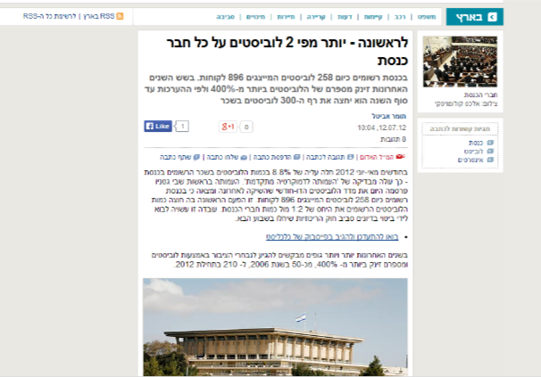
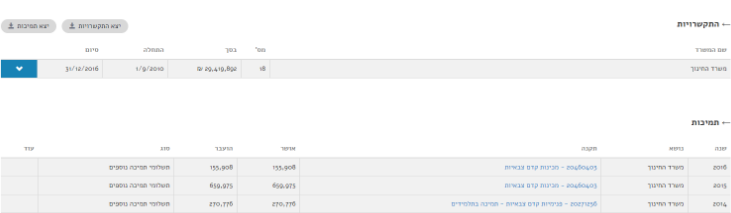
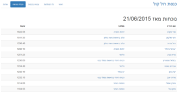
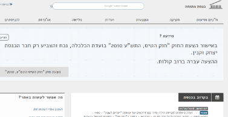
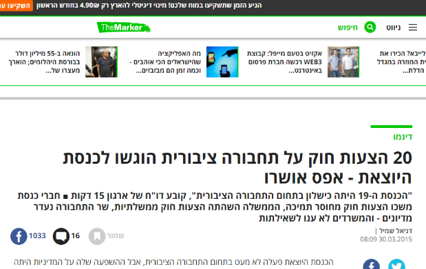
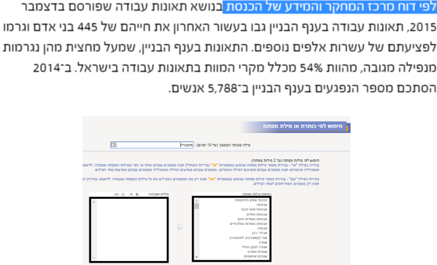
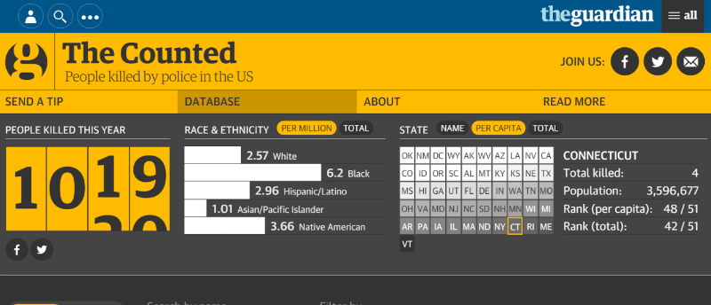
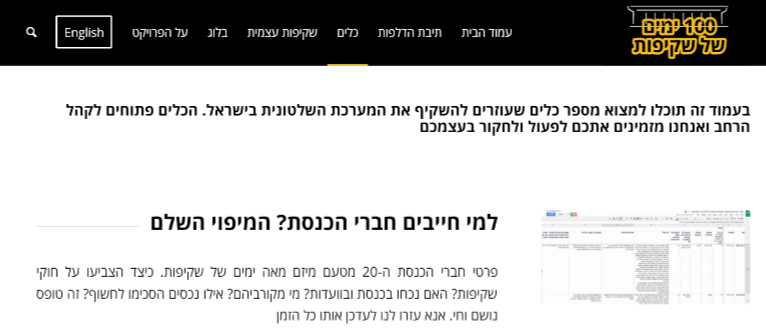

המדיה החדשה
מאת תומר אביטל @TomerAvital1
מחוץ לקופסא
חופש המידע בחו״ל
ספירת טוויטים פר נושא/מילים מסוימות
ראיונות בהפתעה
מעקב בשטח
להקליט תמיד!
לספור נתונים גלויים\ראשים
התקציב השקוף\ניצול תקציב
התקציב השקוף\ניצול תקציב
לצלול למרכז העצבים של המדינה
לצלול למרכז העצבים של המדינה
לצלול למרכז העצבים של המדינה
מרכז המחקר והמידע (ממ"מ)
לבקש מהציבור נתונים
מאגרי מידע באתר השקיפות

תומר אביטל
https://www.facebook.com/tomer.avital1 | @tomeravital1 | tomeravital@gmail.com
Credits
Backgrounds from flickr under Creative Commons - click for list
News screenshots under fair use as far as I know